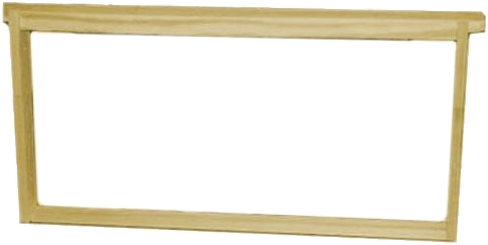
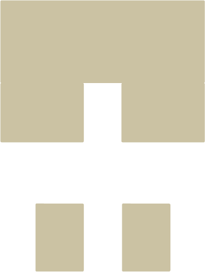

Overview

Langstroth Frame
In a Langstroth hive, the removable frame is used to hold the foundation which the bees expand to become storage areas. There are a number of variations:
- Those used to hold wired wax foundation. These typically have horizontal wires which are heated to fuse the wires in the foundation to the frame. The horizontal wires work with the vertical ones (in the foundation) to enable less damage to the comb during the extraction.
- Those used to hold cut comb wax foundation. These do not have any wires.
- Those used to hold plastic foundation.
- Plastic frames with built in foundation (e.g., the drone cell frames)
- Those which are not used with any foundation. These typically have a bulge in the frame's top bar as a base for the bees to build their comb, pulling it down towards the bottom of the frame.
Notes on Making One
Be sure to glue the pieces together with all-weather glue (e.g., TiteBond III) in addition to the staples and/or nails.
When assembling frames, build a jig which allows for the assembly of many frames. The YouTube video noted below from Roger's Shop shows the process with such a jig.
The instructions are in this document for assembling a wax foundation frame.
|
|
|
Wired or Pinned?
The use of horizontal wires to secure the wax in place is one which works well to support the foundation when the frame is being spun out in an extractor. This is particularly the case for tangential extractors; it is less of an issue with radial extractors.
 Tangential Extractor |
 Radial Extractor |
The pictures above depict two different 4-frame extractors: one tangential; one radial.
- The red arrows depict the rotation of the extractor to spin the honey out of the frames.
- The blue arrows depict the centrifugal force pulling against the frame (and thusly the honey in the frame).
As can be also noted with the tangential extractor, this force will pull against the center of the frame. This force can pull the foundation out of the frame’s woodenware. The horizontal wires help reduce that risk.
That is not an issue with the radial extractor. And, as the use of horizontal wires to secure the wax is a bit time-consuming when building the frames, some prefer to use foundation support pins when using radial extractors.
|
|
|
Wax-Coated Plastic Foundation

Frame parts for
wax-coated
plastic
foundation
The top and bottom bars for frames used for wax-coated plastic foundation look like the picture to the right (when used from the end).
|
|
|
No Foundation
Frame parts for
no foundation
The top bars for frames used with no foundation look like the picture to the right (when used from the end).
More Information
Presentations
- Hive Frame assembly jig (YouTube video), by Roger's Shop.